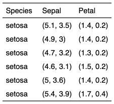

| as_bracket {flextable} | R Documentation |
The function is producing a chunk by
pasting values and add the result in brackets.
It should be used inside a call to as_paragraph().
as_bracket(..., sep = ", ", p = "(", s = ")")
... |
text and column names |
sep |
separator |
p |
prefix, default to '(' |
s |
suffix, default to ')' |

Other chunk elements for paragraph:
as_b(),
as_chunk(),
as_equation(),
as_highlight(),
as_image(),
as_i(),
as_sub(),
as_sup(),
colorize(),
gg_chunk(),
hyperlink_text(),
linerange(),
lollipop(),
minibar(),
plot_chunk()
ft <- flextable( head(iris),
col_keys = c("Species", "Sepal", "Petal") )
ft <- set_header_labels(ft, Sepal="Sepal", Petal="Petal")
ft <- compose(ft, j = "Sepal",
value = as_paragraph( as_bracket(Sepal.Length, Sepal.Width) ) )
ft <- compose(ft, j = "Petal",
value = as_paragraph( as_bracket(Petal.Length, Petal.Width) ) )
ft